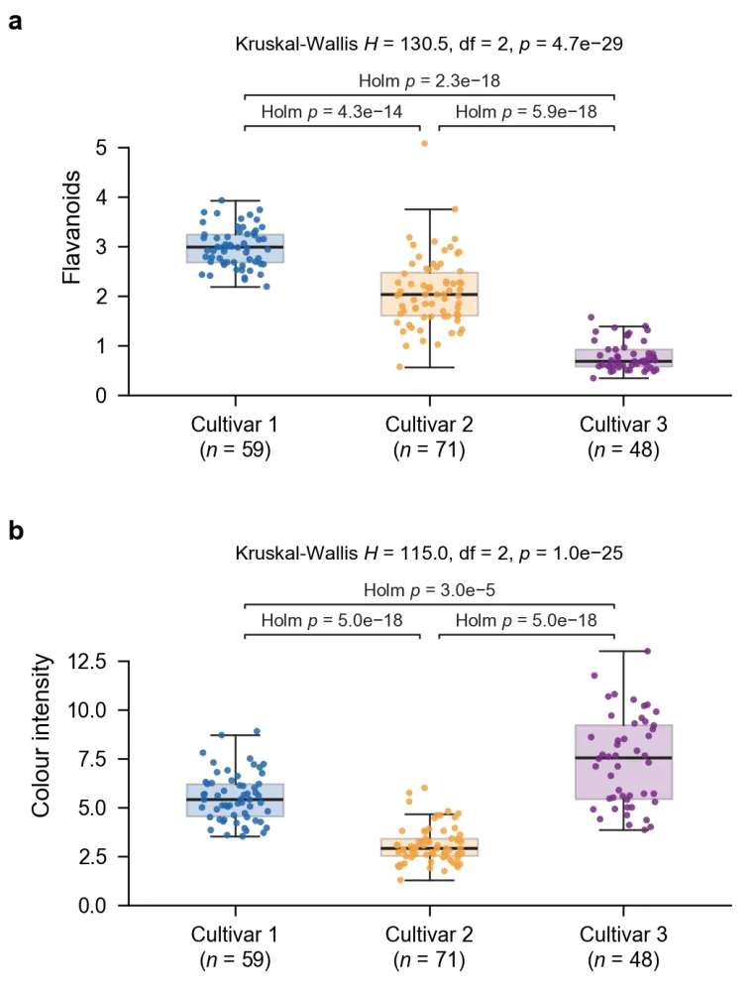
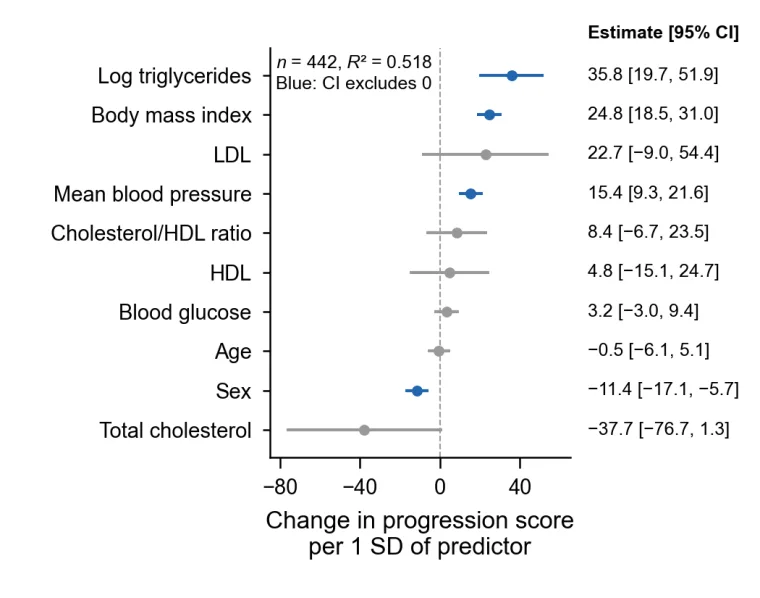

Academic / Free preview
Figures for research papers, drawn from your data
Send your data and say what the figure must show. You get a figure sized and set for your journal, the script that draws it, and a note of every statistic in it. You see a preview before you pay.



Price
One figure, up to 2 panels
£30
A panel is one plot inside the figure, such as the parts labelled a and b in the first sample below.
One figure, up to 6 panels
£60
For a figure that sets several plots side by side to make one argument.
The preview is free. You pay only if you want the files. One round of changes is included. For comparison, two services that reset a figure you have already drawn list $70 a figure (Wiley Editing Services) and from $75 a figure (LetPub), as read on their websites in November 2026.
What you send
- The data as a CSV or Excel file, with a line on what each column is.
- The question the figure must answer, in a sentence. For example: "Do the three groups differ in X?"
- The journal, or the width you need. If you name neither, the figure is 89 mm wide, the single-column width of Nature, Science and Cell journals.
- Any wishes on the type of chart, the colours or the order of the groups.
What you get
- The figure as a vector PDF with the fonts embedded, an SVG, and a PNG at 300 dots per inch. A TIFF is sent on request.
- The Python script that draws the figure from your data file, so that you or a co-author can run it again when the data change.
- A statistics note: the number of observations in each group, what the centre line and the error bars show, each test with its exact result, any correction for multiple tests, and which column feeds which mark.
- A draft caption of 40 to 80 words.
Three samples
These were drawn for this page from public datasets that ship with the scikit-learn library. None of them is a client's figure. Each is 89 mm wide.


How it works
- Email the data file and your question.
- If the request leaves a choice open, such as which groups to compare, questions come back first. Nothing is guessed.
- A small preview image comes back within two working days, free of charge.
- If you want the files, a Stripe payment link follows. The files are sent when the payment arrives.
- One round of changes is included.
- If the files differ from the preview you accepted and the changes do not fix it, the payment is returned in full.
What is not done
- Data are never invented, changed or left out to improve a figure. If a row cannot be used, for example because a value is missing, the statistics note says how many rows and why.
- Photographs, gels, blots and microscope images are not edited.
- Drawn illustrations and schematic diagrams are not offered.
- Figures are drawn in Python with the matplotlib and seaborn libraries. Figures that need R packages are not offered.
- The choice of analysis stays yours. The statistics note sets out what was computed so that you can check it.
Your data
Your file is used for your figure only. Part of the work is done with AI tools that run on other companies' services, so the contents of your file pass through those services. The file is deleted from the studio's computer 30 days after delivery, or earlier if you ask. Do not send data that identifies a person, or data that you are not allowed to share with anyone outside your project.
Check the rules of your journal or university on outside help and on AI tools, because many ask authors to declare them. The delivery note lists what was done so that you can declare it.
How the figures are made
A plotting script is written for your data and run on a computer with no network connection. The figure is then checked against a written checklist that covers the page size, the type sizes, the colours, the labels and the statistics. The style rules and the checklist come from academic-figure-skill, an open source project by TingxiYu under the Apache-2.0 licence. The statistics in the three samples above were computed a second time, separately, and matched.
Contact
Send your data file and what the figure must show.
fanze.meng@fanzstudio.org
If the button does nothing, your computer has no mail program set. Copy the address or use a web mail link.